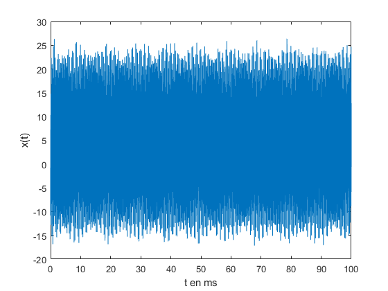
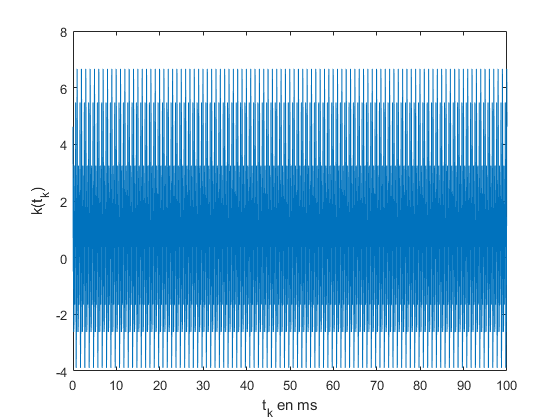
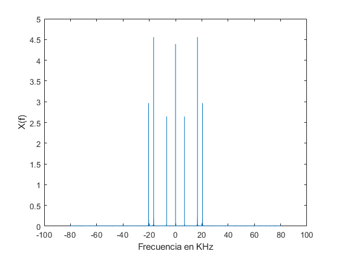
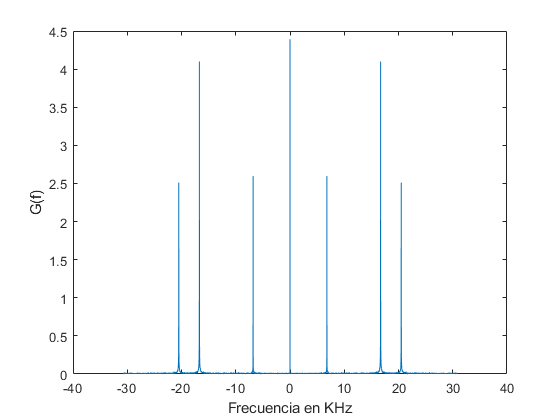
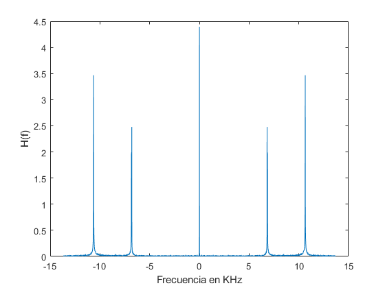
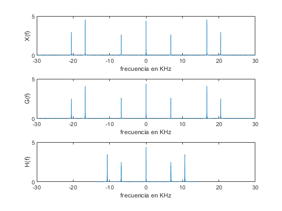
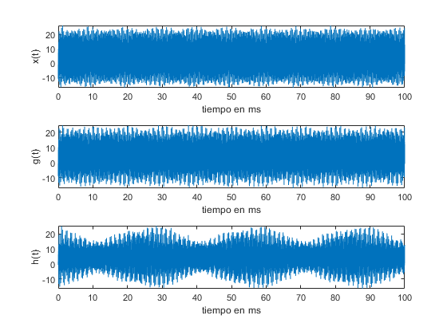
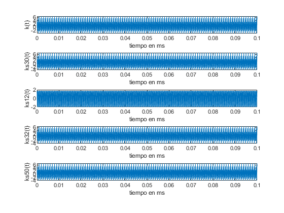
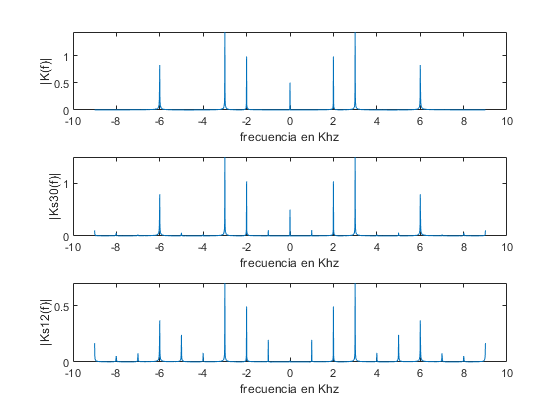

Practica 1
Teresa González y Miguel Oleo
LE1 Grupo 3
Entrega practica 1 PDS.
Contents
Fichero
Cargamos el fichero y hacemos dos plots para ver con que señales estamos trabajando.
load('PDS_P1_LE1_G3.mat'); figure(); plot(t*1000,x); xlabel('t en ms'); ylabel('x(t)'); figure() plot(t_k*1000,k) xlabel('t_k en ms'); ylabel('k(t_k)'); 
Muestreo
Apartado a)
Frecuencia de muestreo [muestras/segundo] = (tiempo que dura la señal/numero de muestras)^-1
f_s = (max(t)/size(x,1))^-1;
Apartado b)
El teorema de Nyquist nos indica que, para que no haya interferencia intersimbólica al muestrear, la frecuencia de muestreo debe ser mayor o igual a dos veces el ancho de banda de la señal.
Para sacar el ancho de banda de la señal, realizamos la transformada de Fourier de dicha señal y la representamos. Para ello también debemos generar un vector de frecuencias. Una vez ya respresentado el espectro de la señal, podemos obtener la máxima componente en frecuencia.
De la grafica sacamos ancho de banda = 20.5 KHz
X = (fft(x,length(x)))/length(x); f_x = linspace(-f_s/2,f_s/2,length(X)); figure() plot(f_x/1000,fftshift(abs(X))); xlabel('Frecuencia en KHz'); ylabel('X(f)'); f_n = 2*20500;
Apartado c)
En este apartado cambiaremos al frecuencia de muestreo a tres medios la frecuencia mínima (la obtenida por el teoríma de Nyquist en el apartado anterior). Para muestrear la señal a esta nueva frecuencia, utilizaremos la funcion interp1.
Al representar gráficamente podemos observar que el espectro de la señal con esta nueva frecuencia de muestreo, es la misma que la original. Esto se debe a que no incumplimos el teorema de Nyquist.
fs1 = (3*f_n)/2; t1 = t(1):1/fs1:t(end); g = interp1(t,x,t1,'spline'); G = (fft(g,length(g)))/length(g); f_g = linspace(-fs1/2,fs1/2,length(G)); figure() plot(f_g/1000,fftshift(abs(G))); xlabel('Frecuencia en KHz'); ylabel('G(f)');
Apartado d)
En este apartado repetiremos el procedimiento del apartado c). Esta vez la frecuencia de muestreo será dos tercios de la frecuencia de Nyquist.
Antes de calcular nada, podríamos decir firmemente que la señal muestreada no será la misma que la original, ya que no comple el teorema de Nyquist.
Como se puede observar, el espectro de esta señal no es equivalente al de la original. Esto se debe a que se produce Aliasing, ya que no hemos cumplido el teorema de Nyquist.
fs2 = (2*f_n)/3; t2 = t(1):1/fs2:t(end); h = interp1(t,x,t2,'spline'); H = (fft(h,length(h)))/length(h); f_h = linspace(-fs2/2,fs2/2,length(H)); figure() plot(f_h/1000,fftshift(abs(H))); xlabel('Frecuencia en KHz'); ylabel('H(f)');
Apartado e)
Vamos a emplear un subplot para representar los espectros de la señal original y las dos señales con las frecuencias de muestreo cambiadas. Se puede ver claramente en la última, que al no cumplir el teorema de Nyquist, no obtenemos la misma señal.
figure() subplot(3,1,1); plot(f_x/1000,fftshift(abs(X))); hold on xlabel('frecuencia en KHz'); ylabel('X(f)'); xlim([-30 30]); subplot(3,1,2); plot(f_g/1000,fftshift(abs(G))); xlabel('frecuencia en KHz'); ylabel('G(f)'); xlim([-30 30]); subplot(3,1,3); plot(f_h/1000,fftshift(abs(H))); xlabel('frecuencia en KHz'); ylabel('H(f)'); xlim([-30 30]);
Apartado f)
Se puede observar una leve potencia a lo largo del espectro. Esto se debe a que hay ruido presente en el sistema. Se ve sobre todo ruido entre las componentes de la tercera gráfica. Tambien hay ruido intersimbólico (presente en la tercera gráfica) y de interpolación, presente en todas las señales. Este último se debe a que, al tener datos discretos de las señales, al hacer el plot, hay una interpolación.
Apartado g)
Una vez más, se puede ver que la tercera señal, no se puede recuperar la misma información que la señal original debido al Aliasing.
figure() subplot(3,1,1) plot(t*1000,x); hold on xlabel('tiempo en ms') ylabel('x(t)') subplot(3,1,2); plot(t1*1000,g); hold on xlabel('tiempo en ms') ylabel('g(t)') subplot(3,1,3); plot(t2*1000,h); hold on xlabel('tiempo en ms') ylabel('h(t)')
Cuantificacion
Apartado a)
Los niveles de cuantificación totales son 2^(B), siendo este número el numero el máximo de combinaciones disponibles con B bits totales (signo, enteros y decimales).
Apartado b)
La magnitud del salto entre dos niveles de cuantificación consecutivos es 1/(2^D), siendo esta la distancia entre dos niveles de cuantificación de la parte decimal D, puesto que es el mínimo salto consecutivo posible (entre dos bits enteros hay 2^D bitsdecimales).
Apartado c)
El rango de cuantificación máximo es de [-2^(B-D),(2^D)-1] hasta [2^(B-D-1)-1, (2^D)-1], siendo B el número total de bits, D bits decimales y B-D bits enteros, y teniendo en cuenta en el rango que los bits enteros tienen signo, pero los decimales no tienen signo.
Apartado d)
Minimo error = 0. (suponemos que no se comete ningún error) Maximo error = 1/2^D*2= 1/2^(D+1, ya que el mayor error cometido es cuando se cuantifica en medio de un nivel de cuantificación (DistanciaEntre2NivelesConsecutivos/2).
Apartado e)
Usando las fórmulas obtenidas, para B=5 y D=3: Niveles de cuantificación: 32 Salto entre niveles: 1/16 Nivel Max: -4,7 ---- Nivel minimo: 1,7 Rango de Error: (0 - 1/32)
Apartado f)
Se cuantifica utilizando la fórmulas del enunciado palabras con B=4 (1 bit de signo, 3 bits enteros y 0 bits decimales) y D=0. Primero se genera la escala de cuantificación y posteriormente se cuantifica la señal k(t) que se facilita en la práctica.
q1 = quantizer('fixed','round','saturate',[4,0]); Ks30 = num2bin(q1,k);
Apartado g)
Se repite el mismo proceso esta vez con B=4 (1 bit de signo, 1 bit entero y 2 bits decimales) y D=2.
q2 = quantizer('fixed','round','saturate',[4,2]); Ks12 = num2bin(q2,k);
Warning: 901 overflow(s) occurred in the fi quantize operation.
Apartado h)
Se repite el mismo proceso esta vez con B=6 (1 bit de signo, 3 bits enteros y 2 bits decimales) y D=2.
q3 = quantizer('fixed','round','saturate',[6,2]); Ks32 = num2bin(q3,k);
Apartado i)
Se repite el mismo proceso esta vez con B=6 (1 bit de signo, 5 bits enteros y 0 bits decimales) y D=0.
q4 = quantizer('fixed','round','saturate',[6,0]); Ks50 = num2bin(q4,k);
Apartado j)
Se analiza en el dominio del tiempo las diferencias entre la señal original y las señales cuantificadas como valores decimales (ya que los valores binarios tienen que tener una interpretación decimal para ser válidos). Para las señales cuantificadas en valor decimal se nos facilita una función.
En la representación temporal de las señales se observan ligeras diferencias. En concreto se puede ver muy claramente que la señal Ks12 se parece a la señal original.
figure() subplot(5,1,1) plot(t_k,k); hold on xlabel('tiempo en ms') ylabel('k(t)') subplot(5,1,2) plot(t_k,bin2num(q1,Ks30)); hold on xlabel('tiempo en ms') ylabel('ks30(t)') subplot(5,1,3) plot(t_k,bin2num(q2,Ks12)); hold on xlabel('tiempo en ms') ylabel('ks12(t)') subplot(5,1,4) plot(t_k,bin2num(q3,Ks32)); hold on xlabel('tiempo en ms') ylabel('ks32(t)') subplot(5,1,5) plot(t_k,bin2num(q4,Ks50)); hold on xlabel('tiempo en ms') ylabel('ks50(t)')
Apartado k)
Se pretende calcular el error cuadrático medio (ECM) cometido en cada cuantificación de las distintas señales, para facilitar la operación se ha creado la función ECM en un fichero aparte, al cual se le llama desde el main principal y muestra por pantalla el ECM de cada señal cuantificada con respecto a la original.
La función ECM recibe como parámetros k original y KsXX cuantificada para cada apartado anterior, y devuelve el valor del ECM. Igual que vimos en las graficas, la funcion nos indica que Ks12 tiene una tasa de error muy superior al resto.
% error Ks30 disp('Error Ks30'); disp(ECM(k,bin2num(q1,Ks30))); % error Ks12 disp('Error Ks12'); disp(ECM(k,bin2num(q2,Ks12))); % error Ks32 disp('Error Ks32'); disp(ECM(k,bin2num(q3,Ks32))); % error Ks50 disp('Error Ks50'); disp(ECM(k,bin2num(q4,Ks50)));
Error Ks30
0.1153
Error Ks12
2.9667
Error Ks32
0.0090
Error Ks50
0.1153
Apartado l)
Se pretende analizar el espectro de la señal original y dos de sus señales cuantificadas (tras pasar los valores binarios a decimales para su representación). Inicialmente calculamos la frecuencia de muestreo correspondiente para acotar el eje de frecuencias y calculamos los módulos de las transformadas de Fourier de las señales en cuestión.
Por último, volvemos a hacer incapié en como al cuantificar se produce un error. En la señal Ks30 se observa un error pero leve. Sin embargo, se puede observar que el espectro de Ks12 es muy distinto al original.
Los picos que se pueden observar a lo largo del espectro (los que no aparecen en la señal original), se deben a errores en la cuantificación.
f_sk = (max(t_k)/size(k,1))^-1; K = (fft(k,length(k)))/length(k); f_k = linspace(-f_sk/2,f_sk/2,length(K)); Ks30f = (fft(bin2num(q1,Ks30),length(bin2num(q1,Ks30))))/length(bin2num(q1,Ks30)); Ks12f = (fft(bin2num(q2,Ks12),length(bin2num(q2,Ks12))))/length(bin2num(q2,Ks12)); figure() subplot(3,1,1); plot(f_k/1000,fftshift(abs(K))); hold on xlabel('frecuencia en Khz') ylabel('|K(f)|') subplot(3,1,2); plot(f_k/1000,fftshift(abs(Ks30f))); hold on xlabel('frecuencia en Khz') ylabel('|Ks30(f)|') subplot(3,1,3); plot(f_k/1000,fftshift(abs(Ks12f))); hold on xlabel('frecuencia en Khz') ylabel('|Ks12(f)|')